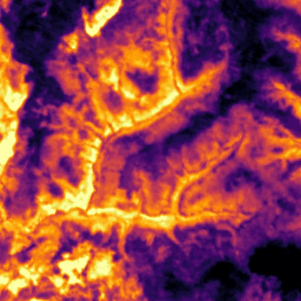

Benchmark / Near-lossless / l8-tirs-2 / l8-tirs-2-08
l8-tirs-2-08
siberia-taiga · 2023-09-02 · sample details

Metadata
| id | l8-tirs-2-08 |
|---|---|
| source | LANDSAT/LC08/C02/T1 (Landsat Collection 2 Level-1) |
| asset | LANDSAT/LC08/C02/T1/LC08_142018_20230902 |
| crs | EPSG:32647 |
| transform | 269415.0 30.0 0.0 6666285.0 0.0 -30.0 |
| datetime_start | 2023-09-02T04:45:21.671Z |
| datetime_end | 2023-09-02T04:45:21.671Z |
| bands | B10|B11 |
| shape | 2x512x512 |
| dtype | uint16 |
| unit | DN |
| scale | 1 |
| offset | 0 |
| nodata | 0 |
| input_sha256 | f0e29e1be2f44f755eebd7fdb77c7b4392dc2d53ee17458c30393e9a09efed47 |
| site | siberia-taiga |
| regime | tree |
| lon | 95.002 |
| lat | 60.004 |
| spacecraft | LANDSAT_8 |
| sensor | OLI_TIRS |
| product_id | LC08_L1TP_142018_20230902_20230911_02_T1 |
| wrs_path | 142 |
| wrs_row | 18 |
| acquired_m | 100 |